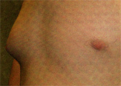
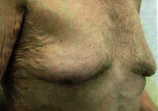

Gynaecomastia
DEFINITION
Differential diagnosis presented here, with some additional relevant
information.
top D I A B M
I M home
INCIDENCE
See causes.
top D I A B M
I M home
AETIOLOGY
Physiological
Teenagers may have pubertal
hypertrophy (80% resolve spontaneously).

- cf senescent hypertrophy in older men.

Inflammation
Cirrhosis.
EM
Hypogonadism and sieve.
Renal failure
Malnutrition.
Tumour
Testicular malignancies.
DPT
Alcohol, cannabis.
Digoxin, spironolactone, ACE inhibitors.
Estrogens.
Phenothiazines, theophylline.
top D I A B M
I M home
BIOLOGICAL BEHAVIOUR
Physiological
Teenage boys
Frequently bilateral
- though may be unilateral.
top D I A B M
I M home
MANIFESTATIONS
Physiological
May be painful
Signs
Smooth firm discoid mass evenly distributed beneath areolar.
Needs to be differentiated from fatty tissue - seen in fat people.
- should be little confusion with carcinoma, which rarely occurs in
men.
top D I A B M
I M home
INVESTIGATIONS
1. Sample any dominant masses carefully.
- mammogram, USS, particularly if +ve hx
- FNA / core biopsy of palpable masses.
2. TFTs, LFTs, alpha-fetoprotein, Beta-HCG, prolactin
3. Scrotal ultrasound in young me; USS/CT abdo in older men for
liver.
top D I A B M
I M home
MANAGEMENT
Physiological
Reassure; 75% improve in 2y without treatment
May pass unnoticed and regress in adulthood.
Discuss surgical option if cosmetic concern or fails to regress.
Older
Treat cause and operate if reqd
top D I A B M
I M home